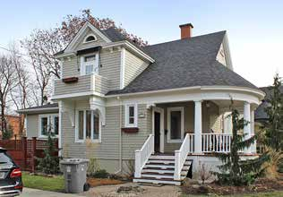

House of Arts and Crafts influence La maison d'influence Arts and Crafts

© Ville de Saint-Lambert / Patri-Arch (G. Mongrain, M. Dubois), Répertoire des courants architecturaux, fiche 7

© Ville de Saint-Lambert / Patri-Arch (G. Mongrain, M. Dubois), Répertoire des courants architecturaux, fiche 7
Low, broad and shingled or roughcast, with a roof that breaks into different slopes and a porch big enough to live on. Ornament is the structure itself: exposed rafters, a bit of half-timbering, brackets under the porch roof. Scattered rather than clustered in Saint-Lambert.
Arts and Crafts (Morris, Ruskin) reached the United States and merged with Shingle Style and Craftsman, spread by mail-order plan catalogues; in Montréal it produced a return of English house types and of New France forms, but "à Saint-Lambert, ce sont les modèles américains qui perpétuent le mouvement pittoresque". Cousin of Mount Royal's Garden City house, hence the shared canonical type.
| Tenure / plan | single-family |
|---|---|
| Storeys | 1.5 |
| Roof form | gabled-multi |
| Roof pitch | – |
| Window proportion | – |
| Principal cladding | wood-shingle, roughcast, clay-brick, wood-clapboard |
| Roofing | see materials |
| Garage | none |
| Lot width | – |
| Front setback | – |
| Side setback | – |
| Front yard green | – |
What Répertoire des courants architecturaux says about this type
- Found here and there in Saint-Lambert, built in the first half of the 20th century; American models carry the picturesque movement locally.
- One-and-a-half-storey body with an articulated plan (projections and forebodies) and pitched roofs of varied shapes and unequal slope lengths.
- Several covered projections, galleries, balconies, porches, verandas, on all façades; gables, turrets, oriels and bays frequent; a generously sized gallery.
- Corps de bâtiment d'un étage et demi au plan articulé (excroissances et avancées) avec toit en pente de formes variées et aux versants de longueurs inégales.
- La maison Arts and Crafts possède généralement plusieurs saillies couvertes – galeries, balcons, porches et vérandas – sur l'ensemble de ses façades. Des pignons, des tourelles, des oriels et des baies en saillie sont également fréquents.
- Sober ornament: chambranles and corner boards on wood-clad houses; traditional structural members (half-timbering, rafters) used as ornament; galleries with worked posts and brackets.
- La maison d'influence Arts and Crafts possède habituellement une ornementation sobre. … certains éléments de charpente traditionnels, comme des colombages ou des chevrons, servent d'ornements. Les galeries sont souvent parées de boiseries décoratives avec des poteaux ouvragés et des aisseliers.
- Wood doors with glazing, with or without transom.
- Wood casements or guillotine windows, with or without muntins, varied in shape and size.
- Dormers of varied models.
- Portes en bois avec vitrage, avec ou sans imposte.
- Fenêtres à battants en bois ou fenêtres à guillotine avec ou sans carreaux, de formes et de dimensions variées.
- Lucarnes de modèles variés.
- Brick, roughcast, cedar shingle or wood clapboard.
- Roof: traditional sheet metal preferred; cedar shingle, tile and asphalt shingle acceptable.
- Les murs extérieurs des maisons d'influence Arts and Crafts peuvent être en brique, en crépi, en bardeau de cèdre ou en clin de bois. … Pour le toit, la tôle traditionnelle … est à privilégier, mais le bardeau de cèdre, la tuile et le bardeau d'asphalte sont acceptables.
- Natural materials only; no imitation; industrial claddings and plastic proscribed.
- Wood projections maintained and repainted; ornament kept or reproduced; do not overload, "la sobriété reste de mise".
- Steel/PVC doors unsuitable unless perfect imitations; avoid sliding, crank, undivided, aluminium or PVC windows.
- Do not raise foundations or change pitches; side/rear reduced-volume additions only.
Same word elsewhere
- Garden City House (Town of Mount Royal)
- Faubourg House (Town of Mount Royal)
- Canadian House (Town of Mount Royal)
- New England House (Town of Mount Royal)
- Georgian House (Town of Mount Royal)
- English Manor House (Town of Mount Royal)
- Bungalow (Town of Mount Royal)
- Cottage (Town of Mount Royal)
- Split-Level (Town of Mount Royal)
- Prairie House (Town of Mount Royal)
- Faubourg house (Le Plateau-Mont-Royal (borough of Montréal))
- Detached urban house (Le Plateau-Mont-Royal (borough of Montréal))
- Row urban house (Le Plateau-Mont-Royal (borough of Montréal))
- Traditional French and Québécois house (Saint-Lambert)
- Mansard-roofed house of Second Empire influence (Saint-Lambert)
- Queen Anne style house (Saint-Lambert)
- Boomtown house with false mansard (Saint-Lambert)
- Boomtown house with crown (parapet or cornice) (Saint-Lambert)
- Cubic (Four Square) house (Saint-Lambert)
- The modern house (including the bungalow) (Saint-Lambert)
Same form elsewhere
- Garden City House (Town of Mount Royal)
Same period elsewhere
- Garden City House (Town of Mount Royal)
- Faubourg House (Town of Mount Royal)
- Faubourg Apartment Block (Town of Mount Royal)
- Canadian House (Town of Mount Royal)
- New England House (Town of Mount Royal)
- New England Apartment Block (Town of Mount Royal)
- Georgian House (Town of Mount Royal)
- English Manor House (Town of Mount Royal)
- Faubourg house (Le Plateau-Mont-Royal (borough of Montréal))
- Detached urban house (Le Plateau-Mont-Royal (borough of Montréal))
- Duplex without front setback (Le Plateau-Mont-Royal (borough of Montréal))
- Duplex with front setback (Le Plateau-Mont-Royal (borough of Montréal))
- Duplex with exterior stair (Le Plateau-Mont-Royal (borough of Montréal))
- Triplex with interior stair (Le Plateau-Mont-Royal (borough of Montréal))
- Triplex with exterior stair (Le Plateau-Mont-Royal (borough of Montréal))
- Multiplex (Le Plateau-Mont-Royal (borough of Montréal))
- Row urban house (Le Plateau-Mont-Royal (borough of Montréal))
- Apartment block without courtyard (Le Plateau-Mont-Royal (borough of Montréal))
- Apartment block with courtyard (Le Plateau-Mont-Royal (borough of Montréal))
- Small apartment building (Le Plateau-Mont-Royal (borough of Montréal))
Same style elsewhere
- Garden City House (Town of Mount Royal)